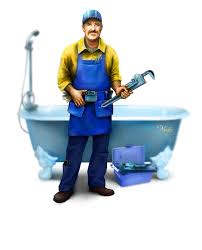
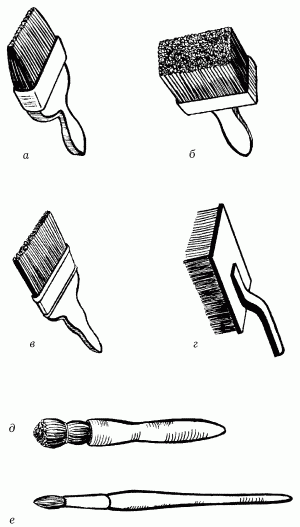
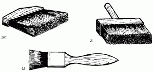
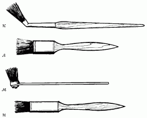
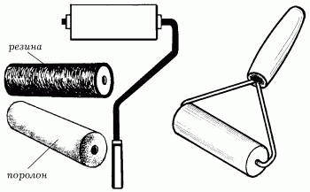
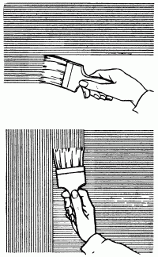
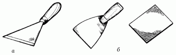
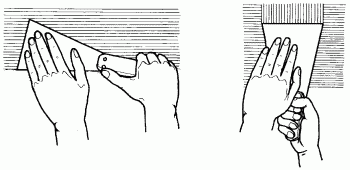

Малярные и отделочные инструменты.


Рис. 51. Разновидности кистей: а – побелочная; б – макловица; в – флейц; г – торцовка; д – ручник; е – филеночная.

Рис. 51. Разновидности кистей (продолжение): ж – щетка для смывания; з – щетка для сметания; и – кисть для лака плоская.

Рис. 51. Разновидности кистей (продолжение): к – изогнутая кисть для окрашивания труб парового отопления; л – прямая кисть для окрашивания радиаторов; м – навинчивающаяся кисть; н – плоская кисть.
Маховые кистиВыпускаются в основном больших размеров, диаметром 60 и 65 мм, с длиной волоса 100 мм. У хорошей кисти при сгибании волос должен немедленно выпрямляться, не оставляя видимой кривизны.
Кисти в виде пучка волос, которые требуют специальной вязки, называются весовыми, кисти в патроне с ручкой – штучными. Весовые кисти после подвязки крепким шпагатом насаживают на длинную ручку – штырек.
Любую кисть подвязывают, потому что длинный волос плохо растушевывает краску и создает много потеков. Поэтому маляры-профессионалы считают, что для клеевой окраски неподвязанный волос должен быть длиной 7–9 см, для масляной и эмалевой – 5–7 см.
Побелочные кистиИмеют ширину 200 мм, толщину – 45–60 мм, длину волоса – 100 мм. Эта кисть в 2,5 раза производительнее маховой и позволяет получать более чистое окрашивание.
МакловицыИногда применяются вместо побелочной кисти, изготавливаются из полухребтовой щетины с 50 % конского волоса. По форме они бывают круглыми, диаметром 120 и 170 мм, с длиной щетины 94–100 мм или прямоугольными.
Ручка макловиц крепится в середине колодки или делается съемной, на винтах. Работу макловицей выполняют со стремянки или с пола. Макловицы и побелочные кисти рекомендуется применять при клеевых и казеиновых окрасках. Обычная окраска, выполненная побелочными кистями или макловицами, не требует флейцевания.
РучникиИмеют небольшой размер и насаживаются на короткую деревянную ручку. Их изготавливают из чистой щетины, а также с добавлением конского волоса. Выпускаются они диаметром 26, 30, 35, 40, 45, 50, 54 мм. Ручники подвязываются шпагатом, который по мере износа кисти перемещают, увеличивая длину волоса. Последняя должна быть не более 30–40 мм.
Применяют ручники для окраски клеевой и масляной красками небольших поверхностей. Ручники из мягкой щетины, закрепленной в металлических кольцах, пригодны для любых работ. Если щетина закреплена с помощью клея, то кисти не следует применять для окрашивания клеевыми и известковыми окрасочными составами.
ФлейцыЭто плоские кисти шириной 25, 60, 62, 76 и 100 мм, изготовленные из высококачественной щетины или из барсучьего волоса, закрепленного в металлической оправе, надетой на короткую деревянную ручку. Применяются флейцы в основном для сглаживания свеженанесенной краски, то есть для уничтожения следов от маховой кисти или ручников. Флейцы можно применять и для окрашивания.
ТорцовкиИмеют прямоугольную форму и изготавливаются из твердой щетины. Их основное назначение – это обработка свежеокрашенной поверхности. Торцовкой наносят равномерные удары, сглаживая неровности краски. Как правило, торцуют клеевые и масляные краски.
Филеночные кистиВыпускаются диаметром до 18 мм и изготавливаются из белой жесткой щетины, закрепленной в металлической оправе-патроне. Патроны крепят на деревянных ручках различной длины. Такие кисти предназначены для вытягивания узких полос, называемых филенками, или для окраски таких мест, куда не проходит ручник.
ВаликиПо многим показателям валики значительно удобнее и производительнее кистей, особенно если речь идет об окраске больших площадей. Валиками можно не только красить, но и грунтовать.

Рис. 52. Виды валиков.
Диаметр валика – 4–7 мм, длина – 10–25 см.
Валики бывают меховые и поролоновые. Меховой валик предварительно нужно погрузить на некоторое время в воду, от этого жесткость волосяного покрытия на нем сравняется. Следует помнить, что меховой валик не рекомендуется применять при работе с известковыми красками, известь очень быстро разрушает мех.
Окончив работу, валики обязательно промывают в теплой воде с мылом, удаляя всю краску.
Уход за кистямиЧтобы уменьшить износ волоса кисти, следует соблюдать следующие условия:
– во время работы кисть необходимо периодически вращать в руках, что обеспечивает равномерный износ волоса или щетины по всей окружности кисти. Если этого не сделать, она изнашивается с одной или двух сторон. Нажим на кисть должен быть такой силы, чтобы краска хорошо втиралась в поверхность, но волос истирался как можно меньше. Чем более гладкая поверхность, тем меньше изнашивается кисть;
– если делается кратковременный перерыв в работе масляными красками, кисти следует опустить в ведро с водой, керосином или скипидаром. Можно держать их в той же краске, которой выполняют окрашивание, или в олифе, но в подвешенном состоянии так, чтобы они не касались волосом дна посуды. Подвешивают кисти для того, чтобы они своей тяжестью не давили на волос. От давления он изгибается и в дальнейшем не расправляется, принимая уродливую, малопригодную для работы форму. Для подвешивания в ручках кистей сверлят специальные отверстия, завязывают шпагат, подвешивая кисть на крючок или гвоздь;
– кисти с волосом в деревянных оправах не следует опускать в воду, потому что дерево набухает, клей размокает, и волос из кисти вылезает;
– после окончания работы кисти тщательно моют сначала в керосине, скипидаре или уайт-спирите, чтобы смыть масло или краску, а затем промывают в мыльной воде. Моют до тех пор, пока вода не будет окрашиваться. После этого кисти снова промывают чистой водой;
– особенно тщательно ухаживают за торцовками и флейцами. Их следует мыть несколько раз в день в тех случаях, когда перерыв в работе превышает 30 минут;
– клеевые краски легко смываются чистой водой, лучше теплой или горячей. После мытья кисти отжимают, придают им форму факела и подвешивают волосом вниз. Если волос расходится, то его связывают марлей. После окраски клеевыми красками кисти рекомендуется мыть каждый день;
– временно подвязанные кисти после работы масляными красками следует развязать и тщательно промыть, если этого не сделать, то краска засохнет под подвязкой и кисть станет не пригодной для дальнейшей работы.
Подготовка кистей к работеСухой волос и жесткая щетина оставляют на поверхности грубые полосы, снижающие чистоту окраски. Поэтому кисти следует особенно тщательно готовить к работе. Новые кисти надо опустить примерно на 1 ч в воду – от этого волос и щетина размягчаются, набухают, увеличиваются в объеме и не выпадают во время окраски. Мягкие волос и щетина кладут краску ровнее и чище.
Перед работой с масляной окраской намоченные кисти следует хорошо просушить.
Но даже подготовленные таким образом кисти могут оставлять полосы, образуемые отдельно выступающими волосками. В этом случае кисти необходимо подровнять, то есть поработать ими 10–20 мин на грубой штукатурке, бетоне или кирпиче, смочив их в воде или краске. Выравнивать кисти путем обжигания не рекомендуется, так как при этом может сгореть наиболее ценная часть щетины.
Работа маховыми кистямиПо мере использования кисти ее волос истирается и становится короче, работать ею менее удобно. Тогда подвязанную часть кисти немного отпускают, то есть развязывают шпагат, освобождая волос на нужную длину. При этом не следует сильно ослаблять шпагат, чтобы не допустить выпадения волос.
Кисть опускают в окрасочный состав только неподвязанной частью волоса, излишки отжимают от края посуды. Кистью надо работать так, чтобы были равномерные взмахи и краска ложилась ровными, тонкими слоями.
Кисть необходимо периодически вращать в руках, чтобы она срабатывалась равномерно со всех сторон и приобретала форму факела, а не лопаты.
Если нажимать на кисть во время работы слабо, то краска ложится узкими полосами, часто толстым слоем. При сильном нажиме на кисть краска стекает, образуя потеки, но ложится тонким слоем. Поэтому надо сначала на кисть сделать небольшой нажим, а по мере расходования краски нажим увеличивать.
Во время окрашивания кисть следует держать перпендикулярно или с небольшим наклоном к окрашиваемой поверхности.
При окрашивании маховой кистью краску можно наносить как горизонтальными штрихами, так и вертикальными, хорошо их растушевывая. Лучше всего работу вести следующим образом. Окрашивая стены, краску наносят сперва горизонтальными штрихами, а затем движениями по вертикали ее дополнительно растушевывают. В этом случае лучше всего работать вдвоем: один наносит краску горизонтальными штрихами, второй тут же растушевывает ее вертикальными.
Краску, нанесенную кистями, можно выравнивать, как бы припудривая тонким слоем краски с помощью краскопульта или пульверизатора пылесоса.
Работа ручникамиПеред тем как приступать к работе, ручники необходимо подвязать, оставляя длину волоса примерно на 4–5 см, затем хорошо перемешать краску палкой.
Краску набирают небольшими порциями, погружая в нее кисть на 1–2 см. Избыток краски отжимают о мешалку или край посуды.
Краску наносят широкими, ровными мазками. Сначала растушевку ведут в одном, затем в другом направлении. Принятый порядок растушевки следует соблюдать до окончания всей окраски в одном помещении.
Во время работы краску тщательно растушевывают кистью, штрихи наносят как можно тоньше, чем добиваются втирания ее в поры поверхности и лучшего сцепления с грунтом.
По деревянной поверхности масляную краску растушевывают в следующем порядке: при окраске за 1 раз вдоль волокон дерева желательно по направлению к окну; переплетов – по длине брусков; крыши – вдоль ската от конька к желобам. При окрашивании за 2 раза первый слой растушевывают по дереву поперек волокон, а при хорошей шпаклевке – поперек света, падающего из окна.

Рис. 53. Окраска поверхности.
Если окраска выполняется за 3 раза, то первый слой растушевывается в том же направлении, как и последний. Нешпаклеванные полы окрашивают по длине досок.
Отводка филенокФиленкой называется узкая полоска краски шириной от 5 до 30 мм, которые проводят по стыку двух красок разного цвета, например отделяя панель от верха стены. Она не только закрывает неровности двух стыкуемых красок, но и придает помещению законченный вид. По своему цвету филенка должна гармонировать с общей краской, подчеркивая ее и резко не выделяясь.
Филенку или проводят по ровно отбитой линии с помощью шнура, который натирают мелом или сухой краской, чаще всего ультрамарином или охрой. Для работы применяют филеночную кисть нужного диаметра, круглую или плоскую. Отводку выполняют по линейке, у которой с двух сторон сняты фаски. Линейку прикладывают точно по отбитой линии фаской к стене, чтобы предупредить затекание краски под линейку.
Линейку прочно прижимают к стене, чтобы во время работы она не смогла сдвинуться. Филенка должна иметь одинаковую длину и цвет. Поэтому надо кисточку систематически смачивать в краске, отжимать ее излишки, приставлять к линейке и, равномерно нажимая, отводить ровную линию, а это требует соответствующих навыков.
Для отводки филенок применяют клеевые масляные краски. Если, например, на панели масляная, а наверху стен клеевая краска, филенка отводится клеевой краской; если же наверху стен масляная краска, филенка вытягивается масляной краской. Краски применяют более жидкие. Масляные разбавляют скипидаром, клеевые готовят на обычном клею. Но гораздо лучше, когда сухие краски разводят на квасе или пиве. Такие краски ровнее ложатся на поверхность.
Флейцевание и торцеваниеИх производят для того, чтобы удалить грубые полосы, выровнять окрашенную поверхность.
После флейцевания краска становится гладкой, ровной, без просвечивающих мест, а после торцевания – шероховатой, состоящей из мельчайших бугорков.
Флейцевание осуществляется следующим образом: правой рукой берут флейц, а левой – сухую тряпку и легким нажимом на инструмент, так чтобы волос кисти слегка касался поверхности, сравнивают полосы нанесенной краски. Окраску под флейцевание выполняют без пропусков, тщательно растушевывая краску. Постепенно волос флейца пропитывается краской, и его периодически надо протирать чистой краской, отжимая излишки, только после этого он становится пригодным к дальнейшему применению. Мокрыми флейцами работать нельзя, потому что они не выравнивают краску, а как бы размазывают ее. Желательно пользоваться двумя-тремя флейцами поочередно, меняя их. Сильно пропитавшиеся краской флейцы нужно хорошо промыть и обязательно просушить.
Для торцевания краску приготавливают немного гуще, чем для обычной окраски. Если она будет жидкой, то после торцевания начнет стекать, а это придает поверхности некрасивый вид. Техника торцевания состоит в том, что правой рукой берут торцовку, левой – чистую тряпку и по свежеокрашенной поверхности наносят слабые удары торцовкой.
Кисть-торцовка должна только слегка касаться своим волосом краски. От ударов краска разравнивается, образуя на поверхности фактуру под шагрень. Торцовкой надо наносить удары одинаковой силы, что дает возможность получить ровную фактуру. Если сила удара будет меняться, то на поверхности краски могут образовываться отдельные пятна. Также нельзя наносить торцовкой удары по одному и тому же месту более 2 раз. Это приводит к образованию всевозможных пятен. Торцуя, надо следить, чтобы не было пропусков и каждый удар приходился рядом с ранее обработанной поверхностью.
От намокания волоса торцовки ею плохо работать, поэтому ее надо вытирать тряпкой, а после каждого дня работы промывать, протирать и просушивать.
Работа валикамиКроме самого валика, для работы необходимы ванночка или ведро с установленными в них отжимными сетками для снятия излишков краски, набираемой валиком. Валики производительнее кистей. Ими можно грунтовать и окрашивать различные поверхности клеевыми, известковыми и масляными красками. Валиком невозможно окрасить стены в углах, около наличников и плинтусов. Поэтому такие места следует предварительно покрасить любой кистью и хорошо растушевать краску.
Валик опускают в краску и прокатывают им по сетке. Отжав излишек краски, его приставляют к поверхности стены или потолка и ведут в нужном направлении: на стенах сверху вниз, на потолках по направлению световых лучей. Окрашивая стены сверху вниз, затем снизу вверх, накладывают полосы краски одна на другую, так чтобы они перекрывались на 5 см. Вначале валик наносит более толстые слои краски, в этом случае по одному и тому же месту надо прокатить его два или более раз. По мере расходования краски силу нажатия на валик увеличивают. Окрасить стены можно за один прием вертикальными полосами или за два, когда сначала наносят горизонтальные, затем вертикальные полосы.
Иногда краску наносят на поверхность кистями, хорошо растушевывая, а потом прокатывают валиками, разравнивая ее, получая при этом ровную окраску. Валиком не только окрашивают, но и грунтуют поверхности. Грунтовку желательно применять подкрашенную, то есть такого же цвета, как и краска. Срок службы валиков весьма большой. Валиком из высококачественного меха можно окрасить более 3 км2различных поверхностей.
Малярные и отделочные работы ПотолокОтделку помещения начинают с потолка. Его промывают водой до полного удаления старой побелки, удобнее всего использовать для этого маховую кисть.
Отслоившуюся краску удаляют при помощи скребков или металлических шпателей, от пыли поверхность очищают пылесосом. Мелкие трещинки следует расширить шпателем, заполнить штукатуркой и отшлифовать. Поверхности, которые необходимо выравнивать шпаклевкой, сначала грунтуют для того, чтобы связующий компонент не ушел в толщу основания и слой шпаклевки не потерял прочность.
Все сколы и раковины диаметром более 2 мм, а также глубокие трещины затирают цементно-песчаным раствором с добавлением дисперсии ПВА.
Потолок и окрасочный материал перед покраской должны быть соответствующим образом подготовлены. Непосредственно окраску проводят в два приема: первый слой наносят маховой кистью или валиком, второй – специальным распылителем-пульверизатором. В быту для этой цели наиболее часто применяется определенным способом подготовленный пылесос. Шланг такого аппарата необходимо переставить на противоположную, напорную сторону. В комплекте пылесоса всегда находится распылительная насадка с крышкой. На банку с краской помещается всасывающее приспособление, после этого она плотно закрывается крышкой и фиксируется зажимным устройством. Таким образом получается эффективное приспособление для нанесения высококачественного красочного покрытия.
Основной проблемой во время окраски потолка является возможность перепачкаться с ног до головы из-за стекания краски. Чтобы этого не случилось, необходимо надеть старую одежду, а кисть оборудовать нехитрой насадкой для сбора стекающей по ее ручке краски.
СтеныКак мы уже говорили, окраску стен нужно производить после покраски потолка. Первым делом поверхность стены нужно очистить от брызг, налетевших на них после окраски потолка. Затвердевшие брызги удаляются соскабливающим скребком или ножом, плоскость которых по отношению к поверхности следует располагать под углом 30–40°.

Рис. 54. Виды шпателей: а – металлический; б – резиновые.
В тех случаях, когда на поверхность стены ранее накладывался слой грунтовки, красить ее следует после полного высыхания и желательно не позднее 24 часов после грунтования.
Довольно часто стены окрашивают в два цвета. В этих случаях иногда приходится наносить (протягивать) филенку – тонкую полоску краски шириной от 0,5 до 2 см. Проводят эту полоску с помощью тонкой филенчатой кисти по линейке. Основное требование при этом – филеночная полоса должна быть ровной и отчетливой по всей длине.

Рис. 55. Подготовка поверхности стены к отделочным и малярным работам.
Нижняя часть поверхности стены называется панелью. Ее окрашивают масляной краской, так как панели загрязняются быстрее, чем остальная поверхность. Средняя высота панели не превышает 1,8 м.
Часть стены, которая расположена над панелью, имеет название «гобелен», а узкая полоса между гобеленом и потолком именуется фризом. Широкий фриз делает комнату зрительно ниже, чем она есть в действительности. Гобелен иногда огрунтовывают и покрывают известковым раствором, а фризы окрашивают масляной краской или облицовывают декоративными плитками.
На поверхность стены краску можно наносить разбрызгиванием в виде точек или крапа. Делается это следующим образом: в правую руку берется большая маховая кисть или кисть-ручник. Перед поверхностью стены располагают на определенном расстоянии палку и ударяют по ней кистью таким образом, чтобы брызги от удара попадали точно на стену. При окрашивании стены этим способом наиболее красиво выглядит окраска двумя или несколькими различными цветами, хаотично разбрызганными по всей поверхности.
Чтобы обеспечить необходимое качество работы, чаще всего требуется выполнять окраску в два слоя. При этом второй слой нужно наносить на первый, не дожидаясь, пока он высохнет. В тех случаях, когда окраску производят одним слоем, краску допускается наносить на поверхность кистью макловицей.
Очень часто стены кухонь или ванных оформляют рисунками, которые наносят с помощью трафаретов или специальных валиков с рифленой декоративной поверхностью.
Для придания поверхности характерной матовой фактуры производится торцовка с помощью специальной торцовочной щетки. Данную операцию имеет смысл проводить только по свежевыкрашенной поверхности.
Матовый оттенок также можно получить, если приготовить краску с некоторыми специальными добавками. Такой состав можно получить из масляной краски. Для этого в нее добавляется до 0,5 % хозяйственного мыла в виде мыльного раствора и до 10 % специального спирта.
Для приготовления мыльного раствора сначала нарезают стружкой мыло и растворяют его в горячей воде. После этого в полученный раствор добавляют требуемое количество уайт-спирита и смешивают с масляной краской.
Следует заметить, что поверхности, окрашенные такой краской, не отличаются особой прочностью, а потому их нельзя мыть водой. Пыль и грязь с них удаляется пылесосом или с помощью сухих тряпок.
При окраске поверхностей механическим способом с помощью распыления окрашивание их проходит равномерно, а значит, необходимость выравнивания такой поверхности торцеванием и флейцеванием практически отпадает.
Значительные затруднения возникают при окрашивании поверхностей стены на границе с карнизом или при необходимости нанесения нескольких цветов. В этом случае рекомендуется воспользоваться специальной линейкой, которая в данном случае будет выполнять также роль своеобразного щитка, препятствующего растеканию краски на ранее окрашенную поверхность.
При окраске стен клеевыми красками важным условием будет являться отсутствие в комнате сквозняков, иначе существует опасность неравномерного высыхания красочного слоя.
Цветная клеевая побелка состоит из:
– 1 кг просеянного мела;
– 40 г синьки;
– 0,5 л воды;
– 60 г плиточного клея.
Всю массу разбавляют водой до образования сметанообразной жидкости, которая должна легко стекать с кисти. Во время работы ее размешивают, не давая оседать мелу. Стену предварительно смачивают водой и намокшую краску удаляют шпателем. После просушки замазывают все щели и трещины, а стены грунтуют сначала в вертикальном, а затем в горизонтальном направлении.
Краску для стен приготовляют так же, как побелку, только количество клея следует увеличить в два раза. Если краска получилась слишком темной, то в нее следует добавить немного мела, светлую же краску затемняют путем добавления в нее соответствующих цветных пигментов.
Окна и двериОсновным инструментом при окраске окон и дверей является кисть-ручник. Окраску обычно ведут в два слоя. При окраске окон следует позаботиться о предохранении стекол от попадания краски. Также необходимо замазать имеющиеся щели между стеклом и рамой и стыки конструктивных элементов рамы.
Для изготовления замазки в домашних условиях могут потребоваться сухой мел, просеянный через частое сито, натуральная олифа, сухие свинцовые белила и сухой зеленый сурик. Ниже приведены простые рецепты нескольких типов, рассчитанные на получение 1 кг замазки.
Замазка меловая:
– олифа – 200 г;
– мел – 800 г.
Белильная:
– олифа – 150 г;
– белила свинцовые сухие – 250 г;
– мел – 600 г.
Суриковая:
– олифа – 130 г;
– сурик железный сухой – 170 г;
– мел – 700 г.
Приготовление замазки производится следующим образом. На кусок фанеры средних размеров или противень насыпается нужное количество мела в соответствии с рецептом.
В середине горки делается небольшое углубление, в которое наливается теплая олифа, и все перемешивается палочкой или шпателем до получения густой консистенции.
Приготовленный состав пока что абсолютно не пригоден к применению, так как пристает к пальцам работающего. Для того чтобы он перестал липнуть, его некоторое время следует раскатывать и месить, как тесто, но масса при этом должна всегда оставаться однородной, не имея проселок мела или олифы.
Качественно приготовленная замазка должна обладать следующими свойствами:
– иметь высокую пластичность. Валик, скатанный из хорошей замазки, должен хорошо растягиваться и не рваться;
– замазка должна быть мягкой и обладать способностью прилипать к различным материалам: дереву, бетону, стеклу, металлу;
– не отрываться от фальцев при намазывании, иначе плохо приготовленная замазка после высыхания будет растрескиваться и выпадать.